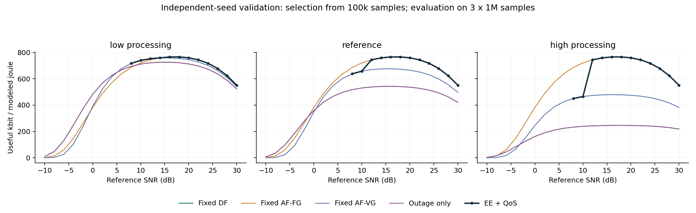

← Hướng dẫn bắt đầuBiên bản kiểm thử 2.0 · 25/11/2026
Mã và dữ liệu thực nghiệm trên máy phát triển. Đây là kiểm thử pilot; các phép đo nhiều vị trí và phần cứng ESP32 vẫn cần thực hiện.
Android thật, lần lượt ba vai trò
SM-G965F, Android 10. Một điện thoại thật được đổi vai trò theo từng lượt; chưa chạy đồng thời hai điện thoại. UDP đi qua Wi-Fi, USB phục vụ cài app và điều khiển kiểm thử.
Hai lượt 1.000 gói dùng 20 gói/giây, payload 128 byte. Lượt CRC chủ động làm hỏng mỗi 5 gói: 200 gửi, 160 hợp lệ; lượt loss bỏ mỗi 4 gói: 200 gửi, 150 hợp lệ. Pause và cancel là tác động kiểm soát. Không gộp chúng vào thống kê mất gói vô tuyến tự nhiên.
Biên bản JSON và run_id · Kiểm thử thao tác trên giao diện
5 phiên lặp Android nguồn → laptop
Mỗi phiên 10 giây × 20 gói/giây × 128 byte: cả 5 phiên đạt 200/200, goodput payload 20,48 kbit/s. RTT p95 theo từng phiên nằm trong 9.63–11.70 ms; trung bình các p95 là 10.45 ms.
Bootstrap 10.000 lần lấy mẫu lại theo phiên, seed cố định. Đây là pilot 5 phiên liên tiếp tại một điều kiện; không phải đánh giá vùng phủ hoặc bằng chứng độ tin cậy tuyệt đối. Khi cả 5 phiên đạt 100%, CI bootstrap co về 100% cũng không chứng minh kênh không bao giờ mất gói.
Thống kê đầy đủ
Đồng nhất PC / Android / ESP32
- 12 kiểm thử Python đạt, bao gồm cấu hình đích sau SoftAP và từ chối Direct sai topology.
- 22 vector hợp lệ/lỗi cho kết quả giống nhau giữa Python, Java và chính header C++ của firmware.
- C++ chạy trên PC kiểm CRC, byte order, peer/timestamp ACK, ACK trùng, pause, lỗi tiêm, giới hạn hop, timeout và cache đầy.
- APK được ký và kiểm chứng chữ ký v2/v3; đã cài thành công lên máy thật.
- Firmware compile thành công với Arduino-ESP32 3.3.0 + ArduinoJson 7.4.2: 1.019.935 byte chương trình, 65.948 byte RAM tĩnh.
Chưa nạp và chưa kiểm radio ESP32. C++ chạy trên PC và biên dịch firmware không chứng minh Wi-Fi AP+STA hoạt động trên board thực. Nút/màn hình ngoài chưa xác định loại nên mặc định không kích hoạt.
Mô phỏng để trình bày và phản biện
Tập chọn 100.000 mẫu; tập đánh giá 3 seed độc lập × 1.000.000 mẫu/điểm; 21 mức SNR; 3 cấu hình chi phí; 5 chính sách, tổng 945 dòng đánh giá. Mẫu fading dùng chung giữa các chính sách trong mỗi điều kiện.
Sai lệch tuyệt đối lớn nhất Monte Carlo DF so với dạng đóng: 0.0007969. Trong các cấu hình đã chạy, selector EE chọn AF-FG/AF-VG ở vùng khả thi; không ép kết quả phải chọn đủ mọi chế độ. Các vùng không đáp ứng QoS được giữ là INFEASIBLE. Không tuyên bố thuật toán mới hay tiết kiệm điện đo trên board.

Kế hoạch · CSV · Tổng hợp 14 paper
Giao diện thực tế

Nền sáng, ba chế độ Mô phỏng / Thiết bị thật / Nhật ký, mô hình 3D và chi tiết từng gói. Ảnh 3D RelayBox là mô hình ý tưởng, không phải ảnh hộp đã lắp.
Bảo toàn và dọn dẹp
14 PDF gốc giữ nguyên SHA-256. Đã dọn 26 mục trung gian, tổng 118.53 MiB: render nháp, cache biên dịch, APK trung gian, archive tool tải về, ELF/map debug. Giữ source, APK cuối, firmware bin, slide/lời thuyết trình, log đo, môi trường chạy và khóa ký Android cục bộ.
Gói ZIP không chứa khóa ký, mật khẩu Wi-Fi, .venv, node_modules hoặc bản sao các PDF người dùng cung cấp. Trên PC hiện tại môi trường đã cài sẵn; máy mới cần Python phù hợp và mạng để cài requirements. Cấu hình Wi-Fi ESP32 nhập qua portal, lưu trên NVS.
Biên bản và hash firmware/source · Danh mục đã dọn